EVENTOS¶
Cuando navegas por la web, tu navegador registra diferentes tipos de eventos. Es la forma del navegador de decir: "Oye, esto acaba de suceder". Tu script puede entonces responder a estos eventos.
Los scripts a menudo responden a estos eventos actualizando el contenido de la página web (a través del Modelo de Objetos del Documento) lo que hace que la página se sienta más interactiva. En este capítulo, aprenderás cómo:
INTERACCIONES: CREAR EVENTOS¶
Los eventos ocurren cuando los usuarios hacen clic o tocan un enlace, pasan el ratón o deslizan sobre un elemento, escriben en el teclado, redimensionan la ventana, o cuando la página que solicitaron se ha cargado.
LOS EVENTOS DISPARAN CÓDIGO¶
Cuando ocurre un evento, o se dispara, puede ser usado para ejecutar una función específica. Diferente código puede ser ejecutado cuando los usuarios interactúan con diferentes partes de la página.
EL CÓDIGO RESPONDE A LOS USUARIOS¶
En el último capítulo, viste cómo el DOM puede ser usado para actualizar una página. Los eventos pueden desencadenar los tipos de cambios que el DOM es capaz de hacer. Así es como una página web reacciona a los usuarios.
DIFERENTES TIPOS DE EVENTOS¶
Aquí hay una selección de los eventos que ocurren en el navegador mientras navegas por la web. Cualquiera de estos eventos puede ser usado para ejecutar una función en tu código JavaScript.
EVENTOS DE UI (INTERFAZ DE USUARIO)¶
Ocurren cuando un usuario interactúa con la interfaz de usuario del navegador en lugar de con la página web.
| Evento | Descripción |
|---|---|
load |
La página web ha terminado de cargarse |
unload |
La página web se está cerrando (generalmente porque se solicitó una nueva página) |
error |
El navegador encuentra un error de JavaScript o un recurso no existe |
resize |
La ventana del navegador ha sido redimensionada |
scroll |
El usuario ha desplazado la página hacia arriba o abajo |
EVENTOS DE TECLADO¶
Ocurren cuando un usuario interactúa con el teclado (ver también el evento input).
| Evento | Descripción |
|---|---|
keydown |
El usuario presiona una tecla (se repite mientras la tecla está presionada) |
keyup |
El usuario suelta una tecla |
keypress |
Se está insertando un carácter (se repite mientras la tecla está presionada) |
EVENTOS DE RATÓN¶
Ocurren cuando un usuario interactúa con un ratón, trackpad o pantalla táctil.
| Evento | Descripcion |
|---|---|
click |
Se dispara cuando el usuario hace clic en el botón primario del ratón (generalmente el botón izquierdo si hay más de uno). El evento click se disparará para el elemento sobre el que está el ratón. También se dispara si el usuario presiona la tecla Enter en el teclado cuando un elemento tiene foco. Un toque en la pantalla táctil se tratará como un solo clic izquierdo. |
dblclick |
Se dispara cuando el usuario hace clic en el botón primario del ratón dos veces en rápida sucesión. Un doble toque se tratará como un doble clic izquierdo. |
mousedown |
Se dispara cuando el usuario presiona cualquier botón del ratón. (No puede ser disparado por teclado.) Puedes usar el evento touchstart. |
mouseup |
Se dispara cuando el usuario suelta un botón del ratón. (No puede ser disparado por teclado.) Puedes usar el evento touchend. |
mouseover |
Se dispara cuando el cursor estaba fuera de un elemento y luego se mueve dentro de él. (No puede ser disparado por teclado.) Se dispara cuando el cursor se mueve sobre un elemento. |
mouseout |
Se dispara cuando el cursor está sobre un elemento, y luego se mueve a otro elemento – fuera del elemento actual o un hijo de él. (No puede ser disparado por teclado.) Se dispara cuando el cursor se mueve fuera de un elemento. |
mousemove |
Se dispara cuando el cursor se mueve alrededor de un elemento. Este evento se dispara repetidamente. (No puede ser disparado por teclado.) Se dispara cuando el cursor se mueve. |
TERMINOLOGÍA¶
LOS EVENTOS SE DISPARAN O SE ELEVAN¶
Cuando un evento ha ocurrido, a menudo se describe como que se ha disparado o elevado. En el diagrama de la derecha, si el usuario está tocando un enlace, un evento click se dispararía en el navegador.
LOS EVENTOS DISPARAN SCRIPTS¶
Se dice que los eventos disparan una función o script. Cuando el evento click se dispara en el elemento de este diagrama, podría desencadenar un script que agrande el elemento seleccionado.
EVENTOS DE ENFOQUE (FOCUS)¶
Ocurren cuando un elemento (por ejemplo, un enlace o campo de formulario) gana o pierde el foco.
| EVENT | DESCRIPTION |
|---|---|
focus / focusin |
El elemento obtiene el foco |
blur / focusout |
El elemento pierde el foco |
EVENTOS DE FORMULARIO¶
Ocurren cuando un usuario interactua con un elemento formulario
| Evento | Descripción |
|---|---|
input |
El valor en cualquier elemento <input> o <textarea> ha cambiado (IE9+) o cualquier elemento con el atributo contenteditable |
change |
El valor en un select, checkbox o radio button cambia (IE9+) |
submit |
El usuario envía un formulario (usando un botón o una tecla) |
reset |
El usuario hace clic en el botón de reinicio de un formulario (rara vez usado hoy en día) |
cut |
El usuario corta contenido de un campo de formulario |
copy |
El usuario copia contenido de un campo de formulario |
paste |
El usuario pega contenido en un campo de formulario |
select |
El usuario selecciona algo de texto en un campo de formulario |
EVENTOS DE MUTACIÓN*¶
Ocurren cuando la estructura del DOM ha sido cambiada por un script. *Serán reemplazados por mutation observers (ver p284)
| Evento | Descripción |
|---|---|
DOMSubtreeModified |
Se ha realizado un cambio en el documento |
DOMNodeInserted |
Se ha insertado un nodo como hijo directo de otro nodo |
DOMNodeRemoved |
Se ha eliminado un nodo de otro nodo |
DOMNodeInsertedIntoDocument |
Se ha insertado un nodo como descendiente de otro nodo |
DOMNodeRemovedFromDocument |
Se ha eliminado un nodo como descendiente de otro nodo |
CÓMO LOS EVENTOS DISPARAN CÓDIGO JAVASCRIPT¶
Cuando el usuario interactúa con el HTML en una página web, hay tres pasos involucrados para lograr que esto ejecute código JavaScript. Juntos, estos pasos se conocen como manejo de eventos.
1. SELECCIONAR EL ELEMENTO¶
Selecciona el elemento o nodo del elemento al que quieres que el script responda.
Por ejemplo, si quieres ejecutar una función cuando un usuario hace clic en un enlace específico, necesitas obtener el nodo DOM para ese elemento de enlace. Esto se hace usando una consulta DOM (ver Capítulo 5).
2. INDICAR EL EVENTO¶
Indica qué evento en el nodo o nodos seleccionados ejecutará la respuesta.
Los programadores llaman a esto vincular un evento a un nodo DOM. Las dos páginas anteriores mostraron una selección de los eventos populares que puedes monitorear.
3. ESPECIFICAR EL CÓDIGO¶
Indica el código que quieres ejecutar cuando ocurra el evento.
Cuando el evento ocurre en un elemento especificado, ejecutará una función. Esta puede ser una función nombrada o anónima.
Los eventos de UI que se relacionan con la ventana del navegador (en lugar de la página HTML cargada en ella) funcionan con el objeto
windowen lugar de un nodo elemento. Ejemplos incluyen los eventos que ocurren cuando una página solicitada ha terminado de cargarse, o cuando el usuario hace scroll. Aprenderás sobre su uso en la p272.Algunos eventos funcionan con la mayoría de los nodos elemento, como el evento
mouseover, que se ejecuta cuando el usuario pasa el ratón sobre cualquier elemento. Otros eventos solo funcionan con nodos elemento específicos, como el eventosubmit, que solo funciona con un formulario.
Aquí puedes ver cómo el manejo de eventos puede ser usado para proporcionar retroalimentación a los usuarios que completan un formulario de registro. Mostrará un mensaje de error si su nombre de usuario es demasiado corto.
1. SELECCIONAR EL ELEMENTO¶
El elemento con el que los usuarios están interactuando es la entrada de texto donde ingresan el nombre de usuario.
2. ESPECIFICAR EL EVENTO¶
Cuando los usuarios salen de la entrada de texto, este pierde el foco y el evento blur se dispara en este elemento.
3. EJECUTAR EL CÓDIGO¶
Cuando el evento blur se dispara en el input de nombre de usuario, ejecutará una función llamada checkUsername(). Esta función verifica si el nombre de usuario tiene menos de 5 caracteres.
Si no hay suficientes caracteres, muestra un mensaje de error que le pide al usuario que ingrese un nombre de usuario más largo.
Si hay suficientes caracteres, el elemento que contiene el mensaje de error debe limpiarse. Esto es porque ya se puede haber mostrado un mensaje de error al usuario y posteriormente corrigió su error. (Si el mensaje de error todavía fuera visible cuando hubieran llenado el formulario correctamente, sería confuso.)
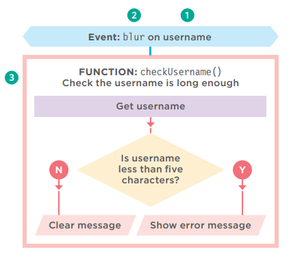
TRES FORMAS DE VINCULAR UN EVENTO A UN ELEMENTO¶
Los manejadores de eventos te permiten indicar qué evento estás esperando en cualquier elemento en particular. Hay tres tipos de manejadores de eventos.
MANEJADORES DE EVENTOS HTML¶
Ver p251
Esta es una mala práctica, pero debes conocerla porque puedes verla en código antiguo. Las versiones tempranas de HTML incluían un conjunto de atributos que podían responder a eventos en el elemento al que se agregaban. Los nombres de los atributos coincidían con los nombres de los eventos. Sus valores llamaban a la función que se ejecutaba cuando ocurría ese evento. Por ejemplo, lo siguiente:
MANEJADORES DE EVENTOS DOM TRADICIONALES¶
Ver p252
Los manejadores de eventos DOM fueron introducidos en la especificación original del DOM. Se consideran mejores que los manejadores de eventos HTML porque permiten separar el JavaScript del HTML. El soporte en todos los navegadores principales es muy sólido para este enfoque.
El principal inconveniente es que solo puedes adjuntar una sola función a cualquier evento. Por ejemplo, el evento submit de un formulario no puede ejecutar una función que verifique el contenido de un formulario y una segunda para enviar los datos del formulario si pasa las verificaciones.
Como resultado de esta limitación, si se usa más de un script en la misma página, y ambos scripts responden al mismo evento, entonces uno o ambos scripts pueden no funcionar como se espera.
LISTENERS DE EVENTOS DOM LEVEL 2¶
Ver p254
Los listeners de eventos fueron introducidos en una actualización de la especificación del DOM (DOM level 2, publicada en el año 2000). Ahora son la forma preferida de manejar eventos.
La sintaxis es bastante diferente y, a diferencia de los manejadores de eventos tradicionales, estos nuevos listeners de eventos permiten que un evento ejecute múltiples funciones. Como resultado, es menos probable que haya conflictos entre diferentes scripts que se ejecutan en la misma página.
Este enfoque no funciona con IE8 (o versiones anteriores de IE) pero encontrarás una solución en p258. Las diferencias en el soporte del navegador para el DOM y los eventos ayudaron a acelerar la adopción de jQuery (pero necesitas saber cómo funcionan los eventos para entender cómo jQuery los usa).
ATRIBUTOS DE MANEJADORES DE EVENTOS HTML (NO USAR)¶
Por favor ten en cuenta: este enfoque ahora se considera una mala práctica; sin embargo, debes conocerlo porque puedes verlo si estás revisando código antiguo. (Ver página anterior.)
En el HTML, el primer elemento <input> tiene un atributo llamado onblur (se ejecuta cuando el usuario sale del elemento). El valor del atributo es el nombre de la función que debe ejecutar.
El valor de los atributos del manejador de eventos sería JavaScript. A menudo llamaría a una función que estaba escrita ya sea en el elemento <head> o en un archivo JavaScript separado (como se muestra a continuación).
Los nombres de los atributos del manejador de eventos HTML son idénticos a los nombres de los eventos mostrados en p246 – p247, precedidos por la palabra "on".
Por ejemplo:
- Los elementos <a> pueden tener onclick, onmouseover, onmouseout
- Los elementos <form> pueden tener onsubmit
- Los elementos <input> para texto pueden tener onkeypress, onfocus, onblur
MANEJADORES DE EVENTOS DOM TRADICIONALES¶
Todos los navegadores modernos entienden esta forma de crear un manejador de eventos, pero solo puedes adjuntar una función a cada manejador de eventos.
Aquí está la sintaxis para vincular un evento a un elemento usando un manejador de eventos, e indicar qué función debe ejecutarse cuando ese evento se dispara:
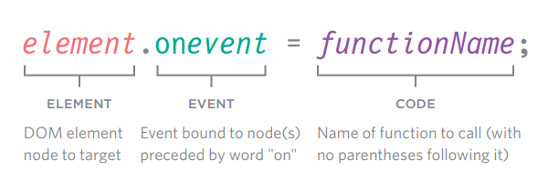
ELEMENT: Nodo elemento del DOM al que apuntar
EVENT: Evento vinculado al nodo(s) precedido por la palabra "on"
CODE: Nombre de la función a llamar (sin paréntesis después)
A continuación, el manejador de eventos está en la última línea (después de que la función ha sido definida y el nodo o nodos del elemento DOM han sido seleccionados).
Cuando se llama a una función, los paréntesis que siguen a su nombre le indican al intérprete de JavaScript que "ejecute este código ahora".
No queremos que el código se ejecute hasta que el evento se dispare, por lo que los paréntesis se omiten en el manejador de eventos en la última línea.
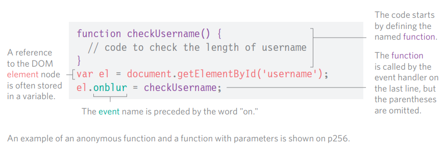
Una referencia al nodo elemento del DOM a menudo se almacena en una variable.
El código comienza definiendo la función nombrada.
La función es llamada por el manejador de eventos en la última línea, pero los paréntesis se omiten.
Un ejemplo de una función anónima y una función con parámetros se muestra en p256.
USANDO MANEJADORES DE EVENTOS DOM¶
En este ejemplo, el manejador de eventos aparece en la última línea del JavaScript. Antes del manejador de eventos DOM, dos cosas se establecen:
1) Si usas una función nombrada, cuando el evento se dispare en el nodo DOM elegido, escribe esa función primero. (También podrías usar una función anónima.)
2) El nodo elemento del DOM se almacena en una variable. Aquí, el input de texto (cuyo atributo id tiene un valor de username) se coloca en una variable llamada elUsername.
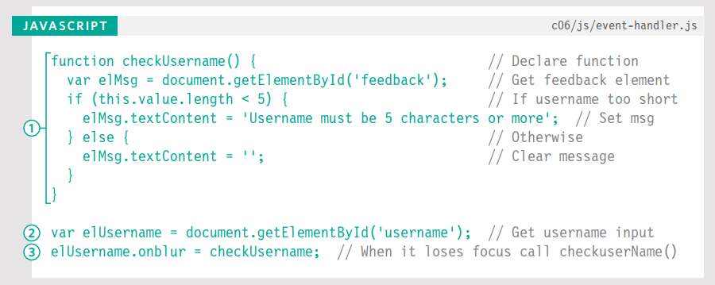
Cuando se usan manejadores de eventos, el nombre del evento está precedido por la palabra "on" (onsubmit, onchange, onfocus, onblur, onmouseover, onmouseout, etc.).
3) En la última línea del ejemplo de código anterior, el manejador de eventos elUsername.onblur indica que el código está esperando que el evento blur se dispare en el elemento almacenado en la variable llamada elUsername.
A esto le sigue un signo igual, luego el nombre de la función que se ejecutará cuando el evento se dispare en ese elemento. Ten en cuenta que no hay paréntesis en el nombre de la función. Esto significa que no puedes pasar argumentos a esta función. (Si quieres pasar argumentos a una función en un manejador de eventos, ver p256.)
El HTML es el mismo que se muestra en p251 pero sin el atributo de evento onblur. Esto significa que el manejador de eventos está en el JavaScript, no en el HTML.
Soporte del navegador: En la línea 3, la función checkUsername() usa la palabra clave this en la sentencia condicional para verificar el número de caracteres que el usuario ingresó. Funciona en la mayoría de los navegadores porque saben que this se refiere al elemento en el que ocurrió el evento.
Sin embargo, en Internet Explorer 8 o versiones anteriores, IE trataba this como el objeto window. Como resultado, no sabría en qué elemento ocurrió el evento y no habría ningún valor del cual verificar la longitud, por lo que generaría un error. Aprenderás una solución para este problema en p264.
LISTENERS DE EVENTOS¶
Los listeners de eventos son un enfoque más reciente para el manejo de eventos. Pueden manejar más de una función a la vez pero no son compatibles con navegadores antiguos.
Aquí está la sintaxis para vincular un evento a un elemento usando un listener de eventos, e indicar qué función debe ejecutarse cuando ese evento se dispara:
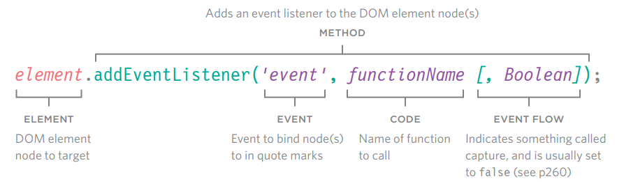
ELEMENT: Nodo elemento del DOM al que apuntar
EVENT Evento a vincular al nodo(s) entre comillas
CODE Nombre de la función a llamar
EVENT FLOW Indica algo llamado captura, y generalmente se establece en
false(ver p260)
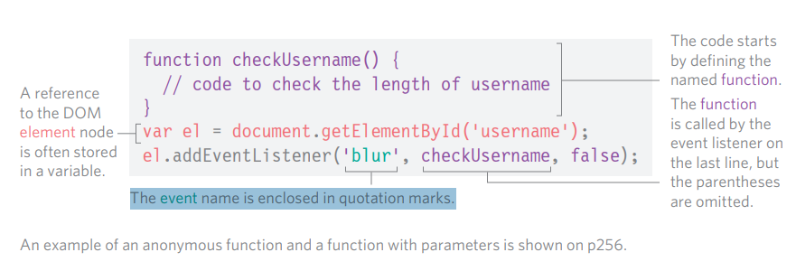
Una referencia al nodo elemento del DOM a menudo se almacena en una variable.
El nombre del evento está encerrado entre comillas.
El código comienza definiendo la función nombrada.
La función es llamada por el listener de eventos en la última línea, pero los paréntesis se omiten.
USANDO LISTENERS DE EVENTOS¶
En este ejemplo, el listener de eventos aparece en la última línea del JavaScript. Antes de escribir un listener de eventos, dos cosas se establecen:
-
Si usas una función nombrada, cuando el evento se dispare en el nodo DOM elegido, escribe esa función primero. (También podrías usar una función anónima.)
-
El nodo o nodos del elemento DOM se almacenan en una variable. Aquí, el input de texto (cuyo atributo
idtiene un valor deusername) se coloca en una variable llamadaelUsername.
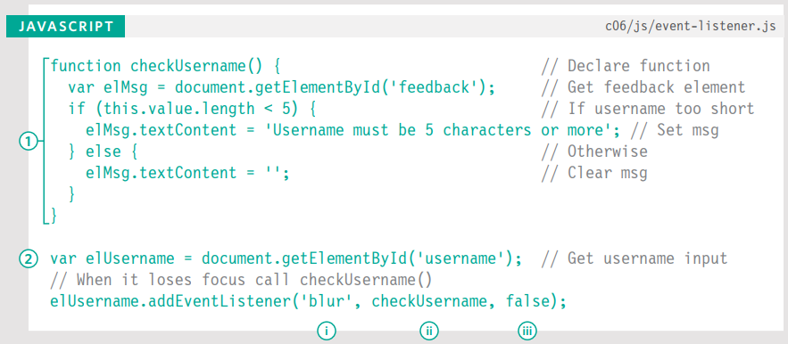
El método addEventListener() recibe tres parámetros:
i) El evento que quieres que escuche. En este caso, el evento blur.
ii) El código que quieres que ejecute cuando el evento se dispare. En este ejemplo, es la función checkUsername(). Ten en cuenta que los paréntesis se omiten donde se llama a la función porque indicarían que la función debería ejecutarse cuando la página se carga (en lugar de cuando el evento se dispara).
iii) Un booleano que indica cómo fluyen los eventos, ver p260. (Generalmente se establece en false).
SOPORTE DEL NAVEGADOR¶
Internet Explorer 8 y versiones anteriores de IE no soportan el método addEventListener(), pero sí soportan un método llamado attachEvent() y verás cómo usarlo en p258.
Además, como en el ejemplo anterior, IE8 y versiones antiguas de IE no sabrían a qué se refería this en la sentencia condicional. Un enfoque alternativo para manejarlo se muestra en p270.
NOMBRES DE EVENTOS¶
A diferencia de los manejadores de eventos HTML y DOM tradicionales, cuando especificas el nombre del evento al que quieres reaccionar, el nombre del evento no está precedido por la palabra "on".
Si necesitas eliminar un listener de eventos, existe una función llamada removeEventListener() que elimina el listener de eventos del elemento especificado (tiene los mismos parámetros).
USANDO PARÁMETROS CON MANEJADORES DE EVENTOS Y LISTENERS¶
Debido a que no puedes tener paréntesis después de los nombres de las funciones en los manejadores de eventos o listeners, pasar argumentos requiere una solución alternativa.
Normalmente, cuando una función necesita alguna información para hacer su trabajo, pasas argumentos dentro de los paréntesis que siguen al nombre de la función.
Cuando el intérprete ve los paréntesis después de una llamada a función, ejecuta el código de inmediato. En un manejador de eventos, quieres que espere hasta que el evento lo active.
Por lo tanto, si necesitas pasar argumentos a una función que es llamada por un manejador de eventos o listener, envuelves la llamada a la función en una función anónima.
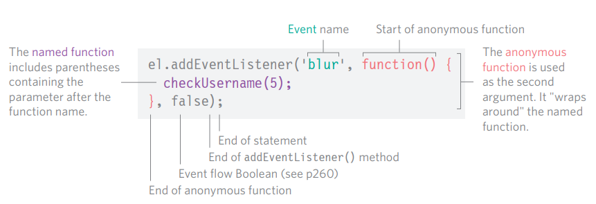
La función nombrada que requiere los argumentos vive dentro de la función anónima.
Aunque la función anónima tiene paréntesis, solo se ejecuta cuando el evento se activa.
La función nombrada puede usar argumentos ya que solo se ejecuta si se llama a la función anónima.
USANDO PARÁMETROS CON LISTENERS DE EVENTOS¶
La primera línea de este ejemplo muestra la función checkUsername() actualizada. El parámetro minLength especifica el número mínimo de caracteres que debe tener el nombre de usuario.
El valor que se pasa a la función checkUsername() se usa en la sentencia condicional para verificar si el nombre es suficientemente largo, y proporcionar retroalimentación si el nombre de usuario es demasiado corto.
El listener de eventos en las últimas tres líneas es más largo que el ejemplo anterior porque la llamada a la función checkUsername() necesita incluir el valor para el parámetro minLength.
Para recibir esta información, el listener de eventos usa una función anónima, que actúa como un envoltorio. Dentro de ese envoltorio, se llama a la función checkUsername() y se le pasa un argumento.
SOPORTE PARA VERSIONES ANTIGUAS DE IE¶
IE5–8 tenía un modelo de eventos diferente y no soportaba addEventListener() pero puedes proporcionar código de respaldo para hacer que los listeners de eventos funcionen con versiones antiguas de IE.
IE5–IE8 no soportaba el método addEventListener(). En su lugar, usaba su propio método llamado attachEvent() que hacía el mismo trabajo, pero solo estaba disponible en Internet Explorer. Si quieres usar listeners de eventos y necesitas soportar Internet Explorer 8 o anterior, puedes usar una sentencia condicional como se ilustra a continuación.
Usando una sentencia if...else, puedes verificar si el navegador soporta el método addEventListener(). La condición en la sentencia if devolverá true si el navegador soporta el método addEventListener(), y puedes usarlo. Si el navegador no soporta ese método, devuelve false, y el código intentará usar el método attachEvent().
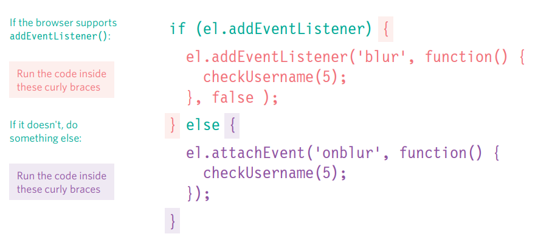
RESPALDO PARA USAR LISTENERS DE EVENTOS EN IE8¶
El código de manejo de eventos se basa en el último ejemplo, pero es mucho más largo esta vez porque contiene el respaldo para Internet Explorer 5–8.
Después de la función checkUsername(), una sentencia if verifica si addEventListener() es soportado o no; devuelve true si el nodo elemento soporta este método, y false si no.
Si el navegador soporta el método addEventListener(), el código dentro del primer conjunto de llaves se ejecuta usando addEventListener().
Si no es soportado, entonces el navegador usará el método attachEvent() que las versiones antiguas de IE entienden. En la versión de IE, ten en cuenta que el nombre del evento debe estar precedido por la palabra "on".
Si necesitas soportar IE8 (o anterior), en lugar de escribir este código de respaldo para cada evento al que respondes, es mejor escribir tu propia función (conocida como función auxiliar) que cree el manejador de eventos apropiado para ti. Verás una demostración de esto en el Capítulo 13, que cubre mejora y validación de formularios.
Sin embargo, es importante entender esta sintaxis, usada por IE8 (y anteriores) para que sepas por qué se usa la función auxiliar y qué está haciendo.
Como verás en el próximo capítulo, este es otro tipo de inconsistencia entre navegadores que jQuery puede manejar por ti.
FLUJO DE EVENTOS¶
Los elementos HTML se anidan dentro de otros elementos. Si pasas el ratón o haces clic en un enlace, también estarás pasando el ratón o haciendo clic en sus elementos padre.
Imagina que un elemento de lista contiene un enlace. Cuando pasas el ratón sobre el enlace o haces clic en él, JavaScript puede ejecutar eventos en el elemento <a>, y también en cualquier elemento en el que el elemento <a> esté contenido.
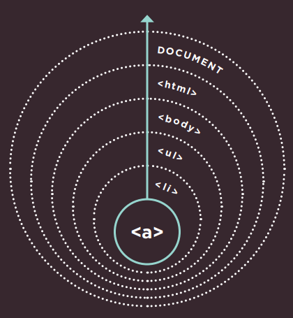
BURBUJEO DE EVENTOS¶
El evento comienza en el nodo más específico y fluye hacia afuera hasta el menos específico. Este es el tipo de flujo de eventos predeterminado con un soporte de navegador muy amplio.
Los manejadores/listeners de eventos pueden vincularse a los elementos <li>, <ul>, <body>, y <html> que los contienen, además del objeto document, y el objeto window. El orden en que se disparan los eventos se conoce como flujo de eventos, y los eventos fluyen en dos direcciones.
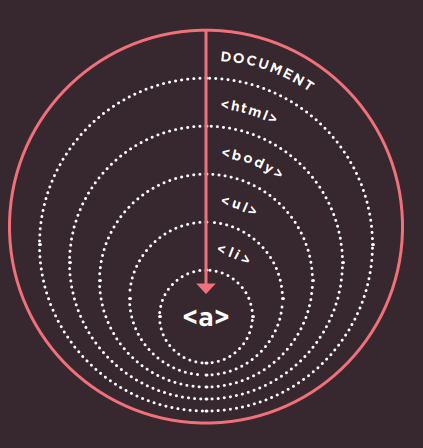
CAPTURA DE EVENTOS¶
El evento comienza en el nodo menos específico y fluye hacia adentro hasta el más específico. Esto no es soportado en Internet Explorer 8 y anteriores.
POR QUÉ IMPORTA EL FLUJO¶
El flujo de eventos solo realmente importa cuando tu código tiene manejadores de eventos en un elemento y en uno de sus elementos ancestros o descendientes.
El siguiente ejemplo tiene listeners de eventos que responden al evento click en cada uno de los siguientes elementos:
- Uno en el elemento
<ul> - Uno en el elemento
<li> - Uno en el elemento
<a>dentro del elemento de lista
El evento mostrará el contenido HTML de ese elemento en un cuadro de alerta, y el flujo de eventos te dirá en qué elemento se registra el clic primero.
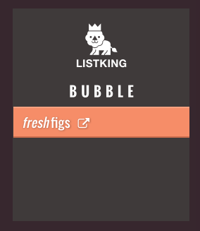
Para los manejadores de eventos DOM tradicionales (y los atributos de eventos HTML), todos los navegadores modernos usan por defecto el burbujeo de eventos en lugar de la captura.
Con los listeners de eventos, el parámetro final en el método addEventListener() te permite elegir la dirección para ejecutar los eventos:
true= fase de capturafalse= fase de burbujeo (falsees a menudo la opción predeterminada porque la captura no era soportada en IE8 o anteriores).
El archivo event-flow.js (mostrado a la izquierda, y disponible en el código de descarga) demuestra la diferencia entre burbujeo y captura. En este ejemplo, los manejadores de eventos tienen un valor de false para su último parámetro, indicando que los eventos deben seguirse en fase de burbujeo. Así que el primer cuadro de alerta muestra el contenido del elemento <a> más interno, y va hacia afuera. También puedes ver la versión de captura en el código de descarga.
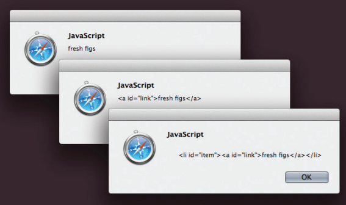
EL OBJETO EVENTO¶
Cuando ocurre un evento, el objeto evento te informa sobre el evento y el elemento en el que ocurrió.
Cada vez que un evento se dispara, el objeto evento contiene datos útiles sobre el evento, tales como:
- En qué elemento ocurrió el evento
- Qué tecla fue presionada para un evento
keypress - En qué parte del viewport el usuario hizo clic para un evento
click(el viewport es la parte de la ventana del navegador que muestra la página web)
El objeto evento se pasa a cualquier función que sea el manejador o listener del evento.
Si necesitas pasar argumentos a una función nombrada, el objeto evento primero se pasará a la función anónima envolvente (esto sucede automáticamente); luego debes especificarlo como un parámetro de la función nombrada (como se muestra en la página siguiente).
Cuando el objeto evento se pasa a una función, a menudo se le da el nombre de parámetro e (por evento). Es una abreviatura ampliamente utilizada (y la verás adoptada a lo largo de este libro). Ten en cuenta, sin embargo, que algunos programadores también usan el nombre de parámetro e para referirse al objeto de error; así que e puede significar evento o error en algunos scripts.
No solo IE8 tenía una sintaxis diferente para los listeners de eventos (como se muestra en p258), el objeto evento en IE5-8 también tenía diferentes nombres para las propiedades y métodos mostrados en las tablas a continuación, y en el ejemplo de p265.
| Propiedad | Equivalente IE5–8 | Propósito |
|---|---|---|
target |
srcElement |
El objetivo del evento (elemento más específico con el que se interactuó) |
type |
type |
Tipo de evento que se disparó |
cancelable |
no soportado | Indica si puedes cancelar el comportamiento predeterminado de un elemento |
| Método | Equivalente IE5–8 | Propósito |
|---|---|---|
preventDefault() |
returnValue |
Cancela el comportamiento predeterminado del evento (si se puede cancelar) |
stopPropagation() |
cancelBubble |
Detiene que el evento burbujee o se capture más allá |
LISTENER DE EVENTOS SIN PARÁMETROS¶
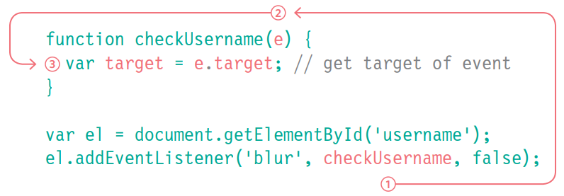
-
Sin que hagas nada, una referencia al objeto evento se pasa automáticamente desde el número 1, donde el listener de eventos llama a la función...
-
Hasta aquí, donde la función está definida. En este punto, el parámetro debe tener un nombre. A menudo se le da el nombre
ede evento. -
Este nombre puede ser usado dentro de la función como referencia al objeto evento. Ahora puedes usar las propiedades y métodos del objeto evento.
LISTENER DE EVENTOS CON PARÁMETROS¶
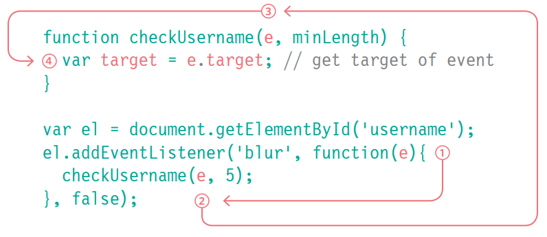
-
La referencia al objeto evento se pasa automáticamente a la función anónima, pero debe tener un nombre en los paréntesis.
-
La referencia al objeto evento puede entonces pasarse a la función nombrada. Se da como el primer argumento de la función nombrada.
-
La función nombrada recibe la referencia al objeto evento como el primer parámetro del método.
-
Ahora puede ser usado por este nombre en la función nombrada.
EL OBJETO EVENTO EN IE5–8¶
A continuación puedes ver cómo obtener el objeto evento en IE5–8. No se pasa automáticamente a las funciones de manejador/listener de eventos; pero está disponible como un hijo del objeto window.
Arriba, una sentencia if verifica si el objeto evento ha sido pasado a la función. Como viste en p168, la existencia de un objeto se trata como un valor truthy, así que la condición aquí está diciendo "si el objeto evento no existe..."
En IE8 y anteriores, e no contendrá un objeto, así que el siguiente bloque de código se ejecuta y e se establece como el objeto evento que es un hijo del objeto window.
OBTENER PROPIEDADES¶
Una vez que tienes una referencia al objeto evento, puedes obtener sus propiedades usando la técnica de la derecha. Esto funciona mediante evaluación de cortocircuito (ver p169).UNA FUNCIÓN PARA OBTENER EL OBJETIVO DE UN EVENTO¶
USANDO LISTENERS DE EVENTOS CON EL OBJETO EVENTO¶
Aquí está el ejemplo que se ha usado a lo largo del capítulo hasta ahora con algunas modificaciones:
- La función se llama
checkLength()en lugar decheckUsername(). Puede ser usada en cualquier entrada de texto. - El objeto evento se pasa al listener de eventos. El código incluye respaldos para IE5–8 (el Capítulo 13 demuestra cómo usar funciones auxiliares para hacer esto).
- Para determinar con qué elemento estaba interactuando el usuario, la función usa la propiedad
targetdel objeto evento (y para IE5–8 usa la propiedad equivalentesrcElement).
Esta función es ahora mucho más flexible que el código anterior que has visto en este capítulo porque:
-
Puede ser usada para verificar la longitud de cualquier entrada de texto siempre que esa entrada esté directamente seguida por un elemento vacío que pueda contener un mensaje de retroalimentación para el usuario. (No debe haber espacio o retornos de carro entre los dos elementos; de lo contrario, algunos navegadores podrían devolver un nodo de espacio en blanco).
-
El código funcionará con IE5–8 porque prueba si el navegador soporta las características más recientes (o si necesita recurrir a usar técnicas antiguas).
DELEGACIÓN DE EVENTOS¶
Crear listeners de eventos para muchos elementos puede ralentizar una página, pero el flujo de eventos te permite escuchar un evento en un elemento padre.
Si los usuarios pueden interactuar con muchos elementos en la página, tales como:
- muchos botones en la interfaz de usuario
- una lista larga
- cada celda de una tabla
agregar listeners de eventos a cada elemento puede usar mucha memoria y ralentizar el rendimiento. Debido a que los eventos afectan a los elementos contenedores (o ancestros) (debido al flujo de eventos – p260), puedes colocar manejadores de eventos en un elemento contenedor y usar la propiedad target del objeto evento para encontrar en cuál de sus hijos ocurrió el evento.
Al adjuntar un listener de eventos a un elemento contenedor, solo estás respondiendo a un elemento (en lugar de tener un manejador de eventos para cada elemento hijo). Estás delegando el trabajo del listener de eventos a un padre de los elementos. En la lista mostrada aquí, si colocas el listener de eventos en el elemento <ul> en lugar de en los enlaces de cada elemento <li>, solo necesitas un listener de eventos. Esto proporciona un mejor rendimiento, y si agregas o eliminas elementos de la lista, seguiría funcionando igual. (El código para este ejemplo se muestra en p269.)
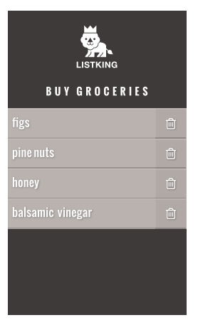
BENEFICIOS ADICIONALES DE LA DELEGACIÓN DE EVENTOS¶
FUNCIONA CON NUEVOS ELEMENTOS
Si agregas nuevos elementos al árbol DOM, no tienes que agregar manejadores de eventos a los nuevos elementos porque el trabajo ha sido delegado a un ancestro.
SOLUCIONA LIMITACIONES CON LA PALABRA CLAVE this
Anteriormente en el capítulo, la palabra clave this se usaba para identificar el objetivo de un evento, pero esa técnica no funcionaba en IE8, o cuando una función necesitaba parámetros.
SIMPLIFICA TU CÓDIGO
Requiere que se escriban menos funciones, y hay menos vínculos entre el DOM y tu código, lo que ayuda al mantenimiento.
CAMBIANDO EL COMPORTAMIENTO PREDETERMINADO¶
El objeto evento tiene métodos que cambian: el comportamiento predeterminado de un elemento y cómo los elementos ancestros responden al evento.
preventDefault()¶
Algunos eventos, como hacer clic en enlaces y enviar formularios, llevan al usuario a otra página. Para prevenir el comportamiento predeterminado de dichos elementos (por ejemplo, para mantener al usuario en la misma página en lugar de seguir un enlace o ser llevado a una nueva página después de enviar un formulario), puedes usar el método preventDefault() del objeto evento.
IE5–8 tienen una propiedad equivalente llamada returnValue que puede establecerse en false. Una sentencia condicional puede verificar si el método preventDefault() es soportado, y usar el enfoque de IE8 si no lo es:
Ten en cuenta que el listener de eventos se adjunta al objeto window (no al objeto document – ya que esto puede causar problemas de compatibilidad entre navegadores).
Si el elemento <script> está al final de la página HTML, entonces el DOM habría cargado los elementos del formulario antes de que el script se ejecute, y no habría necesidad de esperar al evento load. (Ver también: el evento DOMContentLoaded en p286 y el método document.ready() de jQuery en p312.)
stopPropagation()¶
Una vez que has manejado un evento usando un elemento, es posible que quieras detener que ese evento burbujee hacia sus elementos ancestros (especialmente si hay manejadores de eventos separados respondiendo a los mismos eventos en los elementos contenedores).
Para detener el burbujeo del evento, puedes usar el método stopPropagation() del objeto evento. El equivalente en IE8 y anteriores es la propiedad cancelBubble que puede establecerse en true. Nuevamente, una sentencia condicional puede verificar si el método stopPropagation() es soportado y usar el enfoque de IE8 si no:
USANDO AMBOS MÉTODOS¶
A veces verás lo siguiente usado en situaciones similares dentro de una función:
Previene el comportamiento predeterminado del elemento, y previene que el evento burbujee o se capture más allá. También funciona en todos los navegadores, por lo que es popular.
Ten en cuenta, sin embargo, cuando el intérprete encuentra la sentencia return false, deja de procesar cualquier código subsiguiente dentro de esa función y se mueve a la siguiente sentencia después de que la función fue llamada.
Dado que esto bloquea cualquier código adicional dentro de la función, a menudo es mejor usar el método preventDefault() del objeto evento en lugar de return false.
USANDO DELEGACIÓN DE EVENTOS¶
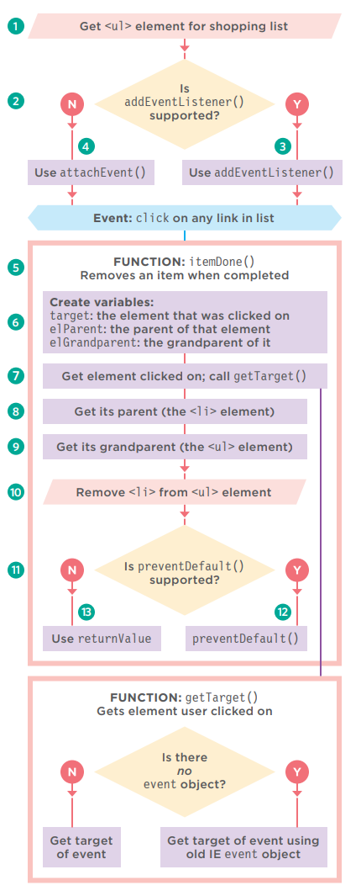
Este ejemplo reunirá gran parte de lo que has aprendido en el capítulo hasta ahora. Cada elemento de la lista contiene un enlace. Cuando el usuario hace clic en ese enlace (para indicar que ha completado esa tarea), el elemento se eliminará de la lista.
- Hay una captura de pantalla del ejemplo en p266.
- A la derecha hay un diagrama de flujo que ayuda a explicar el orden en que se procesa el código.
- La página derecha tiene el código del ejemplo.
1) El listener de eventos se agregará al elemento <ul>, por lo que esto necesita ser seleccionado.
2) Verificar si el navegador soporta addEventListener().
3) Si es así, usarlo para llamar a la función itemDone() cuando el usuario haga clic en cualquier lugar de esa lista.
4) Si no, usar el método attachEvent().
5) La función itemDone() eliminará el elemento de la lista. Requiere tres piezas de información.
6) Se declaran tres variables para contener la información.
7) target contiene el elemento en el que el usuario hizo clic. Para obtener esto, se llama a la función getTarget(). Esta se crea al inicio del script, y se muestra en la parte inferior del diagrama de flujo.
8) elParent contiene el padre de ese elemento (el <li>)
9) elGrandparent contiene el abuelo de ese elemento
10) El elemento <li> se elimina del elemento <ul>.
11) Verificar si el navegador soporta preventDefault() para evitar que el enlace lleve al usuario a una nueva página.
12) Si es así, usarlo.
13) Si no, usar la propiedad returnValue de IE anterior.
En el HTML, los enlaces te llevarían a
itemDone.phpsi el navegador no soportara JavaScript. (El archivo PHP no se suministra con la descarga del código porque los lenguajes del lado del servidor están más allá del alcance de este libro.)
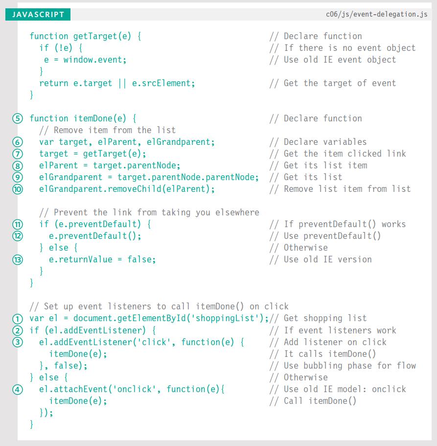
¿EN QUÉ ELEMENTO OCURRIÓ UN EVENTO?¶
Cuando llamas a una función, la propiedad target del objeto evento es la mejor manera de determinar en qué elemento ocurrió el evento. Pero puedes ver el enfoque siguiente usado; se basa en la palabra clave this.
LA PALABRA CLAVE this¶
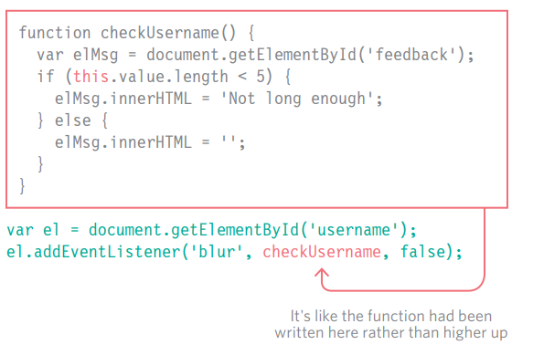
La palabra clave this se refiere al propietario de una función. A la derecha, this se refiere al elemento en el que está el evento.
Esto funciona cuando no se están pasando parámetros a la función (y por lo tanto no se llama desde una función anónima).
USANDO PARÁMETROS¶
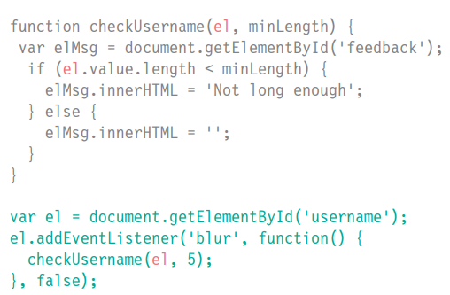
Si pasas parámetros a la función, la palabra clave this ya no funciona porque el propietario de la función ya no es el elemento al que el listener de eventos estaba vinculado, es una función anónima.
Podrías pasar el elemento en el que se llamó al evento como otro parámetro de la función.
En ambos casos, el objeto evento es el enfoque preferido.
DIFERENTES TIPOS DE EVENTOS¶
En el resto del capítulo, aprenderás sobre los diferentes tipos de eventos a los que puedes responder.
Los eventos están definidos en:
- La especificación W3C del DOM
- La especificación HTML5
- En Modelos de Objetos del Navegador
EVENTOS W3C DOM¶
La especificación de eventos DOM es gestionada por el W3C (quienes también supervisan otras especificaciones incluyendo HTML, CSS y XML). La mayoría de los eventos que encontrarás en este capítulo son parte de esta especificación de eventos DOM.
Los navegadores implementan todos los eventos usando el mismo objeto evento que ya conociste. También proporciona retroalimentación como en qué elemento ocurrió el evento, qué tecla presionó un usuario, o dónde está posicionado el cursor.
Sin embargo, hay algunos eventos que no están cubiertos en el modelo de eventos DOM – en particular aquellos que tratan con elementos de formulario. (Solían ser parte del DOM, pero fueron movidos a la especificación HTML5.) La mayoría son resultado de la interacción del usuario con el HTML, pero hay algunos que reaccionan al navegador u otros eventos DOM.
EVENTOS HTML5¶
La especificación HTML5 (que todavía está siendo desarrollada) detalla eventos que se espera que los navegadores soporten y que son usados específicamente con HTML. Por ejemplo, eventos que se disparan cuando se envía un formulario o cuando los elementos del formulario cambian (que encontrarás en p282):
submit, input, change
También hay nuevos eventos introducidos con la especificación HTML5 que solo son soportados por navegadores más recientes. Aquí hay algunos (que encontrarás en p286):
readystatechange, DOMContentLoaded, hashchange
No mostramos todos los eventos, pero los ejemplos que ves deberían enseñarte lo suficiente para que puedas trabajar con todos los tipos de eventos.
EVENTOS BOM¶
Los fabricantes de navegadores también implementan algunos eventos como parte de su Modelo de Objetos del Navegador (o BOM). Típicamente son eventos no cubiertos (aún) por las especificaciones W3C (aunque algunos serán añadidos a las especificaciones W3C en el futuro).
Varios de estos eventos tratan con dispositivos de pantalla táctil:
touchstart, touchend, touchmove, orientationchange
Otros eventos están siendo añadidos para capturar gestos y aprovechar acelerómetros. Se necesita cuidado al usar tales características, ya que diferentes navegadores a menudo crean implementaciones diferentes de funcionalidades similares.
EVENTOS DE INTERFAZ DE USUARIO¶
Los eventos de interfaz de usuario (UI) ocurren como resultado de la interacción con la ventana del navegador en lugar de con la página HTML contenida en ella, por ejemplo, una página que se ha cargado o la ventana del navegador que se ha redimensionado.
El manejador / listener de eventos para eventos UI debe adjuntarse a la ventana del navegador.
En código HTML antiguo, puedes ver estos eventos usados como atributos en la etiqueta de apertura
<body>. (Por ejemplo, código antiguo usaba el atributoonloadpara ejecutar código cuando la página se había cargado.)
| Evento | Soporte del navegador |
|---|---|
load |
Se dispara cuando la página web ha terminado de cargarse. También puede dispararse en nodos de otros elementos que cargan, como imágenes, scripts u objetos. DOM Level 2 (Nov 2000) indica que se dispara en el objeto document, pero antes de esto se disparaba en el objeto window. Los navegadores soportan ambos para compatibilidad hacia atrás, y los desarrolladores a menudo todavía adjuntan manejadores de eventos load al objeto window (no document). |
unload |
Se dispara cuando la página web se está cerrando (generalmente porque se ha solicitado una nueva página). Ver también el evento beforeunload (en p286) que se dispara antes de que el usuario salga de una página. DOM Level 2 indica que se dispara en el nodo del elemento <body>, pero en navegadores antiguos se disparaba en el objeto window (esto se usa a menudo para compatibilidad hacia atrás). |
error |
Se dispara cuando el navegador encuentra un error de JavaScript o un recurso no existe. El soporte para este evento es inconsistente entre navegadores por lo que no es confiable para el manejo de errores, un tema que aprenderás más en el Capítulo 10. |
resize |
Se dispara cuando la ventana del navegador ha sido redimensionada. Los navegadores disparan repetidamente el evento resize mientras la ventana se está redimensionando, así que evita usar este evento para ejecutar código complicado porque podría hacer que la página parezca menos responsive. |
scroll |
Se dispara cuando el usuario ha desplazado la página hacia arriba o abajo. Puede relacionarse con toda la página o con un elemento específico en la página (como un <textarea> que tiene barras de desplazamiento). |
LOAD¶
El evento load se usa comúnmente para ejecutar scripts que acceden al contenido de la página. En este ejemplo, una función llamada setup() le da foco al input de texto cuando la página se ha cargado. El evento es elevado automáticamente por el objeto window cuando una página ha terminado de cargar el HTML y todos sus recursos: imágenes, CSS, scripts (incluso contenido de terceros como anuncios publicitarios).
La función setup() no funcionaría antes de que la página se cargue porque depende de encontrar el elemento cuyo atributo id tiene un valor de username, para darle foco.
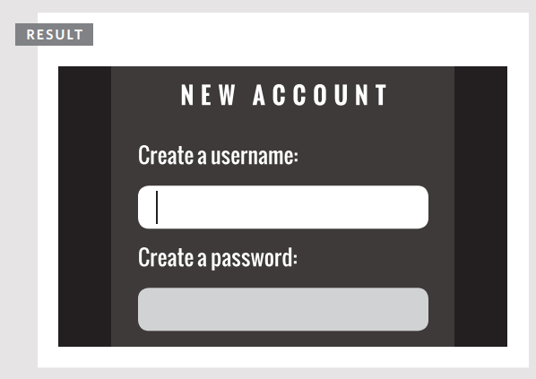
Ten en cuenta que el listener de eventos se adjunta al objeto window (no al objeto document – ya que esto puede causar problemas de compatibilidad entre navegadores).
Si el elemento <script> está al final de la página HTML, entonces el DOM habría cargado los elementos del formulario antes de que el script se ejecute, y no habría necesidad de esperar al evento load. (Ver también: el evento DOMContentLoaded en p286 y el método document.ready() de jQuery en p312.)
Debido a que el evento
loadsolo se dispara cuando todo lo demás en la página se ha cargado (imágenes, scripts, incluso anuncios), el usuario ya podría haber comenzado a usar la página antes de que el script haya comenzado a ejecutarse. Los usuarios notan particularmente cuando un script cambia la apariencia de la página, cambia el foco o selecciona elementos del formulario después de que han comenzado a usarlo. (Puede hacer que un sitio parezca más lento al cargar.)Imagina que este formulario tuviera más inputs; el usuario podría estar llenando el segundo o tercer campo cuando el script se dispara – moviendo el foco de vuelta al primer campo demasiado tarde e interrumpiendo al usuario.
EVENTOS DE FOCO Y BLUR¶
Los elementos HTML con los que puedes interactuar, como enlaces y elementos de formulario, pueden ganar foco. Estos eventos se disparan cuando ganan o pierden el foco.
Si puedes interactuar con un elemento HTML, entonces puede ganar (y perder) foco. También puedes tabular entre los elementos que pueden ganar foco (una técnica a menudo usada por personas con discapacidades visuales).
En scripts antiguos, los eventos focus y blur se usaban a menudo para cambiar la apariencia de un elemento cuando ganaba foco, pero ahora la pseudoclase CSS :focus es una mejor solución (a menos que necesites afectar a un elemento diferente del que ganó foco).
Los eventos focus y blur se usan más comúnmente en formularios. Pueden ser particularmente útiles cuando:
- Quieres mostrar consejos o retroalimentación a los usuarios mientras interactúan con un elemento individual dentro de un formulario (los consejos generalmente se muestran en otros elementos y no en el que están interactuando)
- Necesitas ejecutar validación de formulario a medida que un usuario se mueve de un control al siguiente (en lugar de esperar a que envíen el formulario completo primero)
| Evento | Disparo | Flujo |
|---|---|---|
focus |
Cuando un elemento gana foco, el evento focus se dispara para ese nodo DOM |
Captura |
blur |
Cuando un elemento pierde foco, el evento blur se dispara para ese nodo DOM |
Captura |
focusin |
Igual que focus (ver arriba pero no soportado en Firefox al momento de escribir) | Burbuja y captura |
focusout |
Igual que blur (ver arriba pero no soportado en Firefox al momento de escribir) | Burbuja y captura |
FOCUS & BLUR¶
En este ejemplo, a medida que el input de texto gana y pierde foco, se muestra retroalimentación al usuario en el elemento <div> debajo del input de texto.
La retroalimentación se da usando dos funciones. tipUsername() se ejecuta cuando el input de texto gana foco. Cambia el atributo class del elemento que contiene el mensaje, y actualiza el contenido del elemento.
checkUsername() se ejecuta cuando el input de texto pierde foco. Añade un mensaje y cambia la clase si el nombre de usuario tiene menos de 5 caracteres; de lo contrario, limpia el mensaje.
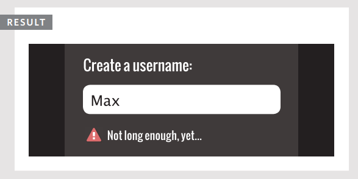
EVENTOS DE RATÓN¶
Los eventos de ratón se disparan cuando el ratón se mueve y también cuando sus botones se hacen clic.
Todos los elementos en una página soportan los eventos de ratón, y todos estos burbujean. Ten en cuenta que las acciones son diferentes en dispositivos de pantalla táctil.
Prevenir un comportamiento predeterminado puede tener resultados inesperados. Por ejemplo, un evento click solo se dispara cuando ambos eventos mousedown y mouseup se han disparado.
| Evento | Disparo y notas |
|---|---|
click |
Se dispara cuando el usuario hace clic en el botón primario del ratón (generalmente el botón izquierdo si hay más de uno). El evento click se disparará para el elemento sobre el que está el ratón. También se dispara si el usuario presiona la tecla Enter en el teclado cuando un elemento tiene foco. Un toque en la pantalla táctil se tratará como un solo clic izquierdo. |
dblclick |
Se dispara cuando el usuario hace clic en el botón primario del ratón dos veces en rápida sucesión. Un doble toque se tratará como un doble clic izquierdo. |
mousedown |
Se dispara cuando el usuario presiona cualquier botón del ratón. (No puede ser disparado por teclado.) Puedes usar el evento touchstart. |
mouseup |
Se dispara cuando el usuario suelta un botón del ratón. (No puede ser disparado por teclado.) Puedes usar el evento touchend. |
mouseover |
Se dispara cuando el cursor estaba fuera de un elemento y luego se mueve dentro de él. (No puede ser disparado por teclado.) Se dispara cuando el cursor se mueve sobre un elemento. |
mouseout |
Se dispara cuando el cursor está sobre un elemento, y luego se mueve a otro elemento – fuera del elemento actual o un hijo de él. (No puede ser disparado por teclado.) Se dispara cuando el cursor se mueve fuera de un elemento. |
mousemove |
Se dispara cuando el cursor se mueve alrededor de un elemento. Este evento se dispara repetidamente. (No puede ser disparado por teclado.) Se dispara cuando el cursor se mueve. |
CUÁNDO USAR CSS¶
Los eventos mouseover y mouseout se usaban a menudo para cambiar la apariencia de cajas o para cambiar imágenes cuando el usuario pasaba el ratón sobre ellos. Para cambiar la apariencia del elemento, una técnica preferible sería usar la pseudoclase CSS :hover.
POR QUÉ SEPARAR MOUSEDOWN Y MOUSEUP¶
Los eventos mousedown y mouseup separan la presión y liberación de un botón del ratón. Se usan comúnmente para agregar funcionalidad de arrastrar y soltar, o para agregar controles en el desarrollo de juegos.
CLICK¶
El objetivo de este ejemplo es usar el evento click para eliminar la nota grande que se ha añadido en medio de la página. Pero primero, el script tiene que crear esa nota.
Debido a que la nota está sobre la página, solo queremos mostrarla a los usuarios que tienen JavaScript habilitado (de lo contrario no podrían ocultarla).
Cuando el evento click se dispara en el enlace de cerrar, se llama a la función dismissNote(). Esta función eliminará la nota que fue añadida por el mismo script.
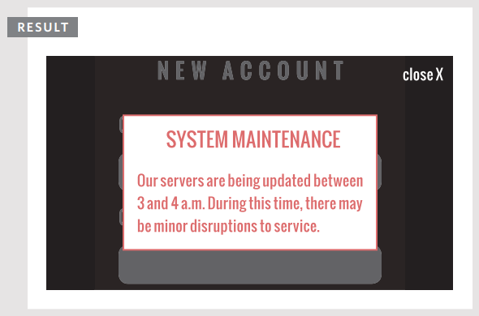
ACCESIBILIDAD¶
El evento click puede aplicarse a cualquier elemento, pero es mejor usarlo solo en elementos sobre los que normalmente se hace clic o no será accesible para las personas que dependen de la navegación por teclado.
También puedes sentirte tentado a usar el evento click para ejecutar un script cuando un usuario hace clic en un elemento de formulario, pero es mejor usar el evento focus porque ese se dispara cuando el usuario accede a ese control usando la tecla tab.
DÓNDE OCURREN LOS EVENTOS¶
El objeto evento puede decirte dónde estaba posicionado el cursor cuando se disparó un evento.
PANTALLA (SCREEN)¶
Las propiedades screenX y screenY indican la posición del cursor dentro de toda la pantalla de tu monitor, midiendo desde la esquina superior izquierda de la pantalla (en lugar del navegador).
PÁGINA (PAGE)¶
Las propiedades pageX y pageY indican la posición del cursor dentro de toda la página. La parte superior de la página puede estar fuera del viewport, así que incluso si el cursor está en la misma posición, las coordenadas de página y cliente pueden ser diferentes.
CLIENTE (CLIENT)¶
Las propiedades clientX y clientY indican la posición del cursor dentro del viewport del navegador. Si el usuario ha desplazado hacia abajo y la parte superior de la página ya no está visible, no afectará las coordenadas del cliente.
DETERMINANDO LA POSICIÓN¶
En este ejemplo, a medida que mueves tu ratón por la pantalla, los inputs de texto en la parte superior de la página se actualizan con la posición actual del ratón.
Esto demuestra las tres posiciones diferentes que puedes recuperar cuando el ratón se mueve o cuando se hace clic en uno de los botones.
Observa cómo showPosition() recibe event como parámetro, que se refiere al objeto evento. Las posiciones son todas propiedades de este objeto evento.
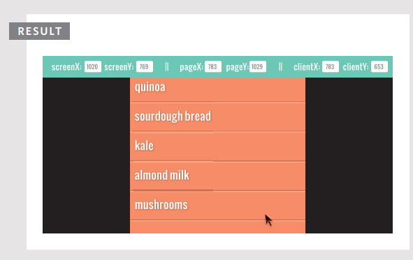
EVENTOS DE TECLADO¶
Los eventos de teclado se disparan cuando un usuario interactúa con el teclado (se disparan en cualquier tipo de dispositivo con teclado).
| Evento | Disparo |
|---|---|
input |
Se dispara cuando el valor de un elemento <input> o <textarea> cambia. Soportado por primera vez en IE9 (aunque no se dispara al eliminar texto en IE9). Para navegadores antiguos, puedes usar keydown como respaldo. |
keydown |
Se dispara cuando el usuario presiona cualquier tecla en el teclado. Si el usuario mantiene presionada una tecla, el evento continúa disparándose repetidamente. Esto es importante porque imita lo que sucedería en un input de texto si el usuario mantiene presionada una tecla (el mismo carácter se añadiría repetidamente mientras la tecla esté presionada). |
keypress |
Se dispara cuando el usuario presiona una tecla que resultaría en un carácter mostrado en la pantalla. Por ejemplo, este evento no se dispararía cuando el usuario presiona las teclas de flecha, mientras que el evento keydown sí. Si el usuario mantiene presionada una tecla, el evento continúa disparándose repetidamente. |
keyup |
Se dispara cuando el usuario suelta una tecla en el teclado. Los eventos keydown y keypress se disparan antes de que un carácter se muestre en pantalla, mientras que keyup se dispara después de que aparezca. |
Los tres eventos que comienzan con key... se disparan en este orden:
keydown– el usuario presiona una teclakeypress– el usuario ha presionado o está manteniendo una tecla que añade un carácter en la páginakeyup– el usuario suelta la tecla
¿QUÉ TECLA SE PRESIONÓ?¶
Cuando utilizas los eventos keydown o keypress, el objeto del evento tiene una propiedad llamada keyCode, la cual puede usarse para saber qué tecla fue presionada. Sin embargo, no devuelve la letra de esa tecla (como podrías esperar); devuelve un código ASCII que representa el carácter en minúscula de esa tecla. Puedes ver una tabla de caracteres y sus códigos ASCII en un recurso adicional en línea del sitio web que acompaña este libro.
Si quieres obtener la letra o número tal como aparecería en el teclado (en lugar de un equivalente ASCII), el objeto String tiene un método incorporado llamado fromCharCode() que hará la conversión por ti:
¿QUÉ TECLA SE PRESIONÓ?¶
En este ejemplo, el elemento <textarea> solo debe tener 180 caracteres. Cuando el usuario ingresa texto, el script mostrará cuántos caracteres le quedan disponibles para usar.
El listener de eventos verifica el evento keypress en el elemento <textarea>. Cada vez que se dispara, la función charCount() actualiza el contador de caracteres y muestra el último carácter utilizado.
El evento input funcionaría bien para actualizar el contador cuando el usuario pega texto o usa teclas como retroceso, pero no dice qué tecla fue la última en presionarse.
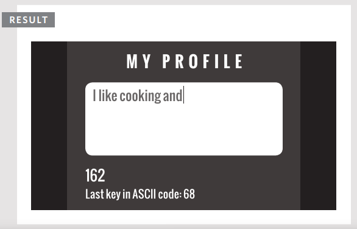
EVENTOS DE FORMULARIO¶
Hay dos eventos que se usan comúnmente con formularios. En particular, es probable que veas submit usado en la validación de formularios.
| EVENTO | DESENCADENANTE |
|---|---|
submit |
Cuando se envía un formulario, el evento submit se dispara en el nodo que representa el elemento <form>. Se usa más comúnmente al verificar los valores que un usuario ha ingresado en un formulario antes de enviarlo al servidor. |
change |
Se dispara cuando el estado de varios elementos de formulario cambia. Por ejemplo, cuando: se hace una selección de un cuadro de selección desplegable, se selecciona un botón de opción, o se selecciona o deselecciona una casilla de verificación. Suele ser mejor usar el evento change en lugar del evento click porque hacer clic no es la única forma en que los usuarios interactúan con los elementos del formulario (por ejemplo, pueden usar las teclas tab, flecha o Enter). |
input |
El evento input, que viste en la página anterior, se usa comúnmente con elementos <input> y <textarea>. |
FOCO Y DESENFOQUE (FOCUS Y BLUR)¶
Los eventos focus y blur (que viste en la pág. 274) se usan a menudo con formularios, pero también pueden usarse junto con otros elementos, como enlaces (por lo que no están específicamente relacionados con formularios).
VALIDACIÓN¶
Verificar los valores de los formularios se conoce como validación. Si los usuarios omiten información requerida o ingresan información incorrecta, verificarla usando JavaScript es más rápido que enviar los datos al servidor para que sean revisados. La validación se cubre en el Capítulo 13.
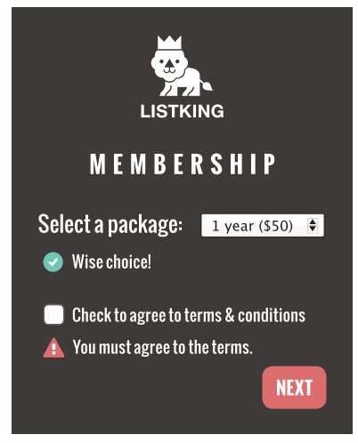
s USANDO EVENTOS DE FORMULARIO¶
Cuando un usuario interactúa con el cuadro de selección desplegable, el evento change activará la función packageHint(). Esta muestra mensajes debajo del cuadro de selección que reflejan la elección.
Cuando se envía el formulario, se llama a la función checkTerms(). Esta verifica si el usuario ha marcado la casilla que indica que acepta los términos y condiciones.
Si no es así, el script evitará el comportamiento predeterminado del elemento del formulario (y evitará que envíe los datos del formulario al servidor) y mostrará un mensaje de error al usuario.
EVENTOS DE MUTACIÓN Y OBSERVADORES¶
Cada vez que se añaden o eliminan elementos del DOM, su estructura cambia. Este cambio desencadena un evento de mutación.
Cuando tu script añade o elimina contenido de una página, está actualizando el árbol DOM. Hay muchas razones por las que podrías querer responder a la actualización del árbol DOM; por ejemplo, podrías querer informar al usuario de que la página ha cambiado.
A continuación se muestran algunos eventos que se desencadenan cuando el DOM cambia. Estos eventos de mutación se introdujeron en Firefox 3, IE9, Safari 3 y todas las versiones de Chrome. Pero ya están programados para ser reemplazados por una alternativa llamada observadores de mutación (mutation observers).
| EVENTO | DESENCADENANTE |
|---|---|
DOMNodeInserted |
Se dispara cuando un nodo se inserta en el árbol DOM, ej. usando appendChild(), replaceChild() o insertBefore(). |
DOMNodeRemoved |
Se dispara cuando un nodo se elimina del árbol DOM, ej. usando removeChild() o replaceChild(). |
DOMSubtreeModified |
Se dispara cuando la estructura del DOM cambia. Se dispara después de que ocurren los dos eventos anteriores. |
DOMNodeInsertedIntoDocument |
Se dispara cuando un nodo se inserta en el árbol DOM como descendiente de otro nodo que ya está en el documento. |
DOMNodeRemovedFromDocument |
Se dispara cuando un nodo se elimina del árbol DOM como descendiente de otro nodo que ya está en el documento. |
PROBLEMAS CON LOS EVENTOS DE MUTACIÓN¶
Si tu script hace muchos cambios en una página, terminas con muchos eventos de mutación disparándose. Esto puede hacer que una página se sienta lenta o no responda. También pueden desencadenar otros listeners de eventos a medida que se propagan a través del DOM, que modifican otras partes del DOM, provocando más eventos de mutación. Por lo tanto, están siendo reemplazados por observadores de mutación.
NUEVOS OBSERVADORES DE MUTACIÓN¶
Los observadores de mutación están diseñados para esperar hasta que un script haya terminado su tarea antes de reaccionar, y luego reportar los cambios como un lote (en lugar de uno a la vez).
También puedes especificar el tipo de cambios en el DOM a los que quieres que reaccionen. Pero al momento de escribirse esto, el soporte de los navegadores no estaba lo suficientemente extendido como para utilizarlos en sitios web públicos.
USO DE EVENTOS DE MUTACIÓN¶
En este ejemplo, dos event listeners activan cada uno su propia función. El primero está en la penúltima línea y escucha cuando el usuario hace clic en el enlace para agregar un nuevo elemento a la lista. Luego utiliza eventos de manipulación del DOM para agregar un nuevo elemento (cambiando la estructura del DOM y activando eventos de mutación).
El segundo event listener espera a que el árbol DOM dentro del elemento <ul> cambie. Cuando se dispara el evento DOMNodeInserted, llama a una función llamada updateCount(). Esta función cuenta cuántos elementos hay en la lista y luego actualiza el contador de la lista en la parte superior de la página en consecuencia.
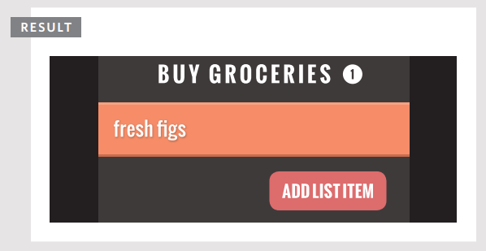
EVENTOS HTML5¶
Aquí hay tres eventos a nivel de página que han sido incluidos en versiones de la especificación HTML5 y que se volvieron populares muy rápidamente.
| EVENTO | DISPARADOR | SOPORTE DE NAVEGADORES |
|---|---|---|
DOMContentLoaded |
El evento se dispara cuando el árbol DOM ha sido formado (las imágenes, CSS y JavaScript podrían seguir cargándose). Los scripts comienzan a ejecutarse antes que usando el evento load, el cual espera a que otros recursos como imágenes y anuncios se carguen. Esto hace que la página parezca cargar más rápido. Sin embargo, como no espera a que los scripts carguen, el árbol DOM no contendrá ningún HTML que haya sido generado por esos scripts. Puede adjuntarse a los objetos window o document. |
Chrome 0.2, Firefox 1, IE9, Safari 3.1, Opera 9 |
hashchange |
El evento se dispara cuando cambia el hash de la URL (sin que toda la ventana se recargue). Los hashes se utilizan en enlaces a partes específicas (a veces conocidas como anclas) dentro de una página y también en páginas que usan AJAX para cargar contenido. El manejador del evento hashchange funciona sobre el objeto window, y después de dispararse, el objeto del evento tendrá las propiedades oldURL y newURL que contienen la URL antes y después del cambio de hash. |
IE8, Firefox 20, Safari 5.1, Chrome 26 y Opera 12.1 |
beforeunload |
El evento se dispara en el objeto window antes de que la página sea descargada. Solo debería utilizarse para ayudar al usuario (no para convencerlo de quedarse en un sitio web si intenta irse). Por ejemplo, puede ser útil informar al usuario que los cambios realizados en un formulario no han sido guardados. Puedes agregar un mensaje al cuadro de diálogo mostrado por el navegador, pero no tienes control sobre el texto mostrado antes de este ni sobre los botones que el usuario puede presionar (los cuales pueden variar ligeramente entre navegadores y sistemas operativos). |
Chrome 1, Firefox 1, IE4, Safari 3, Opera 12 |
También se están introduciendo otros eventos para dar soporte a dispositivos más recientes (como teléfonos y tabletas). Estos responden a eventos como gestos y movimientos basados en un acelerómetro (que detecta el ángulo en el que se sostiene el dispositivo).
USO DE EVENTOS HTML5¶
En este ejemplo, tan pronto como el árbol DOM ha sido formado, se le da foco al campo de texto con el id username.
El evento DOMContentLoaded se dispara antes que el evento load (porque este último espera a que todos los recursos de la página terminen de cargarse).
Si los usuarios intentan abandonar la página antes de presionar el botón de envío, el evento beforeunload verifica que realmente quieran salir.
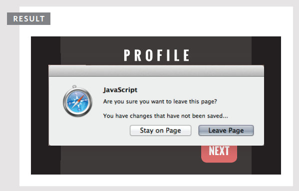
Arriba , puede ver el cuadro de diálogo que aparece cuando intenta salir de la página. El texto que precede a su mensaje y el de los botones pueden variar según el navegador (usted no tiene control sobre esto).
EJEMPLO¶
Este ejemplo muestra una interfaz para que un usuario grabe notas de voz. El usuario puede ingresar un nombre que se muestra en el encabezado, y puede presionar grabar (lo que cambia la imagen que se muestra).
Cuando el usuario comienza a escribir un nombre en el cuadro de texto, el evento keyup activará una función llamada writeLabel() que copia el texto del campo del formulario y lo escribe en el encabezado principal debajo del logotipo de List King, reemplazando las palabras 'AUDIO NOTE'.
El botón de grabar / pausar es un poco más interesante. El botón tiene un atributo llamado data-state. Cuando la página carga, su valor es record.
Cuando el usuario presiona el botón, el valor de este atributo cambia a pause (esto activa una nueva regla CSS para indicar que ahora está grabando).
Si no has utilizado los atributos data- de HTML5, estos permiten almacenar datos personalizados en cualquier elemento HTML. (El nombre del atributo puede ser cualquier cosa que comience con data-, siempre que el nombre esté en minúsculas).
Esto demuestra una nueva técnica basada en delegación de eventos.
El event listener se coloca sobre el elemento contenedor cuyo id es buttons. El objeto del evento se utiliza para determinar el valor del atributo id en el elemento que fue usado. El valor de ese atributo id luego se utiliza en una sentencia switch para decidir qué función llamar (dependiendo de si el botón está en estado record o pause).
Esta es una buena manera de manejar muchos botones porque reduce la cantidad de event listeners en tu código.
Los event listeners están escritos al final de la página y tienen compatibilidad alternativa para usuarios que utilizan IE8 o versiones anteriores (que poseen un modelo de eventos diferente).
El script comienza definiendo las variables que necesitará usar y luego obteniendo los nodos de elementos necesarios.
Las funciones del reproductor (mostradas en la página de la derecha) aparecerían después, y al final de esta página puedes ver los event listeners.
Los event listeners viven dentro de una sentencia condicional para que el método attachEvent() pueda ser utilizado por visitantes que tengan IE8 o versiones anteriores.
La función recorderControls() recibe automáticamente el objeto del evento. Esto no solo ofrece código de compatibilidad para versiones antiguas de IE, sino que también evita que el enlace realice su comportamiento predeterminado (llevar al usuario a una nueva página).
La sentencia switch se utiliza para indicar qué función ejecutar dependiendo de si el usuario intenta grabar o detener la nota de audio.
Esta técnica de delegación es una buena manera de manejar múltiples botones en la interfaz de usuario.
RESUMEN¶
- Los eventos son la manera en que el navegador indica cuándo algo ha ocurrido (como cuando una página termina de cargar o se hace clic en un botón).
- El binding es el proceso de indicar qué evento estás esperando que ocurra y sobre qué elemento esperas que ocurra ese evento.
- Cuando un evento ocurre sobre un elemento, puede activar una función de JavaScript. Cuando esta función cambia la página web de alguna manera, se siente interactiva porque ha respondido al usuario.
- Puedes usar delegación de eventos para monitorear eventos que ocurren en todos los hijos de un elemento.
- Los eventos más comúnmente utilizados son los eventos W3C DOM, aunque también existen otros en la especificación HTML5 y eventos específicos de algunos navegadores.